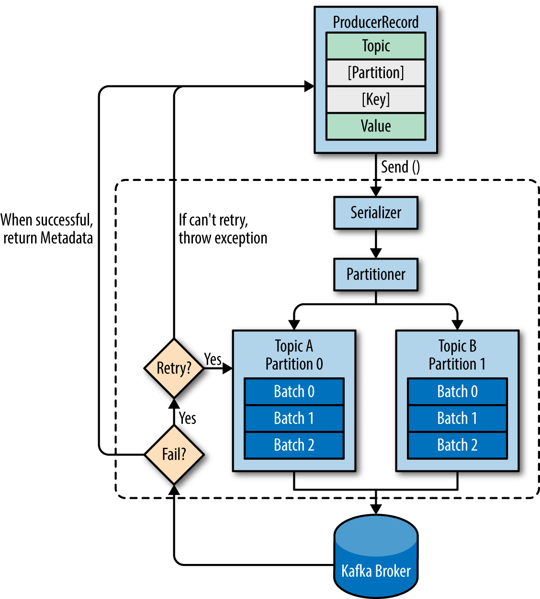
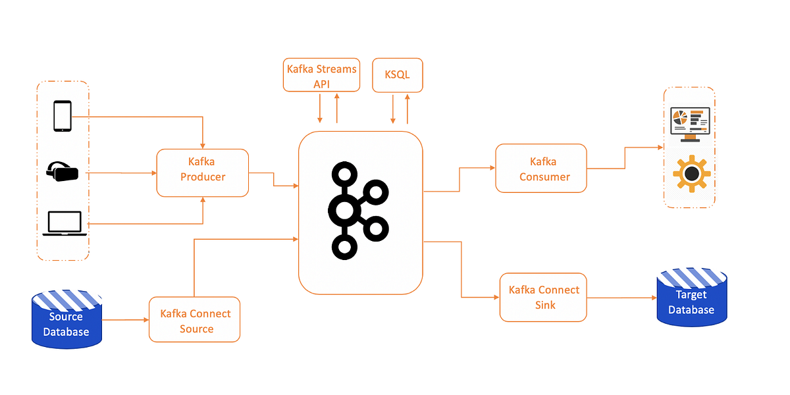

Inhalt Kafka-Mini
- Event
- Kafka Server / Broker
- Topics
- Partitions
- Ökosystem
- Message Semantics
- Demo-Code (Low-Level + Kafka Streams)
- Weiterführende Infos
Event
Apache Kafka is an open-source distributed event streaming platform used by thousands of companies for high-performance data pipelines, streaming analytics, data integration, and mission-critical applications.
Aber was ist ein Event?
Definition eines Events
Ein Event in Kafka ist "irgendetwas", was einen Schlüssel und einen Wert hat und unveränderbar ist (Vergangenheit!).
- Temparatur-Messung eines Hardware-Gerätes
- Business Change Event
- Datenbank-Änderung (CDC)
Kafka Server / Broker
It's just a black box...
Topics
- Topics sind eine pur organisatorische Eineit: Die gleichen Events sollten in dasselbe Topic.
- Log-Semantik:
- neue Einträge werden ans Ende angehängt
- Einträge können nicht gelöscht werden
- Im Gegensatz zu Queues: Normalerweise langlebig.
- Sie werden immer (auf die Disk) persistiert.
Partition (1)
Bricht das Topic (log) in kleinere Einheiten
(ebenfalls Logs).
Sorgt für Skalierbarkeit, weil die Partitionen auf mehreren Nodes laufen können.
Partition (2)
Reihenfolgen-Garantie: innerhalb einer Partition ist die Reihenfolge immer garantiert!
Partition (3)
Der Producer definiert, welches Event auf welcher Partition landet!
Producer Entscheidungsverhalten
Parallelität

Anzahl Partitionen
- Am Anfang lieber zu gross als zu klein
- Eine Änderung bricht die Reihenfolgen-Garantie
Ökosystem
At most once
- Producer
- Möglich, häufig Fehlkonfiguration
- Consumer
- Vermutlich ein Fehler, aber möglich
- Kafka-Streams
- Möglich
- Kafka-Connect
- Möglich, aber noch nie gesehen
At least once
- Producer
- Standard-Verhalten
- Consumer
- Standard-Verhalten
- Kafka-Streams
- Default
- Kafka-Connect
- Je nach Source/Sink Default
Exactly once
Häufig gewünscht, aber meistens teuer
- Producer
- Transaktionalität aktivieren, mehrere Topics
- Consumer
- Transaktionalität + Isolation Level
- Kafka-Streams
- Problemlos möglich (ausser externe Sourcen)
- Kafka-Connect
- Wenn Source/Sink transaktional sind